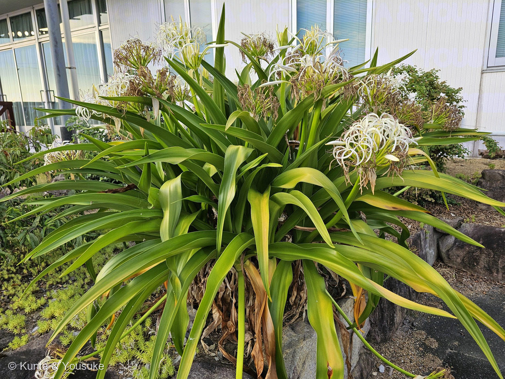
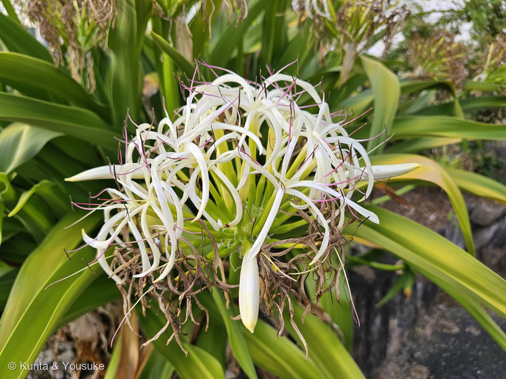
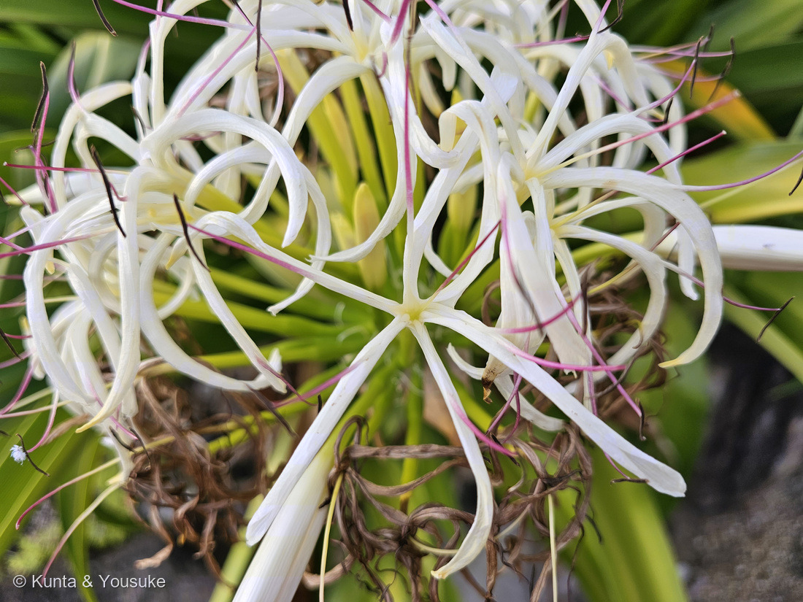

地図を読み込んでいるよ…
🔍 写真も地図も、押しているあいだ拡大して見られるよ（スマホは指を置いてすこし待ってね）。
🌍 の地図＝この子がもともと自生している場所を緑に。東アジアから南アジアの温暖地。日本では房総半島南部から琉球列島など、⭐黒潮に直面した沿岸部に自生。
⭐黒潮に面した、あたたかい海岸の子だよ。日本では房総半島の南部から琉球列島まで。⚠⚠でも、この地図はうそをつく——⭐この子がいるのは「海岸線だけ」なのに、県まるごとが緑になってしまう（071 ハマゴウと同じ型だね）。塗ったのは太平洋・東シナ海がわの県だけで、内陸の県と、北のほうは塗っていない。⭐⭐そしてその北のふちには「ハマオモト線」という名前がついている——年平均気温15℃の等温線とほぼ重なるんだ。⚠東南アジアや韓国も、実際は海岸ぞいだけだよ。
⚠ 地図は国（日本と中国だけ県・省）までしか塗れないから、ほんとうの分布より広く見えていることがあるよ。地図はだいたいの場所。正確なところは、上の文を見てね。
ハマユウ（浜木綿）
Crinum asiaticum L. var. japonicum (Baker)
別名 · ハマオモト（浜万年青）／英名 grand crinum lily・spider lily・⚠poison bulb／ 原産 · 東アジア〜南アジアの温暖地（日本は房総半島南部〜琉球列島の黒潮沿岸）／ 見どころ · ⭐夜に香ってスズメガを呼ぶ・種が海を何ヶ月も漂う・自分の名がついた気温の線がある
ヒガンバナ科 · Amaryllidaceae（ハマオモト属 Crinum）── 084 キツネノカミソリ・131 スノーフレーク・140 アガパンサスと同じヒガンバナ科
名前と学名の由来 ── 神事の白い布と、万年青
- ⭐⭐和名「浜木綿（ハマユウ）」＝その白い花が、木綿（ゆう）——神事で使われる、楮（こうぞ）の木の皮を原料とした白い布——を垂らしたようであることから。⭐海辺（浜）に咲く、白い布の花、ということだね。
- ⭐もうひとつの名「浜万年青（ハマオモト）」＝肉厚で長い葉が、オモト（万年青）に似ているから。⭐花で呼ぶ名と、葉で呼ぶ名の、両方を持っているんだ。
- ⭐属名 Crinum（クリナム）＝ギリシア語の crinon（ユリ）から。⭐この属の花のすがたがユリに似ているため。
- ⭐英名は grand crinum lily／spider lily／⚠ poison bulb。──⚠最後のは「毒の球根」。⭐下の「⚠」の節につながるよ。
⭐⭐ 燻太さんの推理が、当たった
- ⭐燻太さんは、写真を送ってくれたときにこう書いていた：「白くて細長い筒状の花は、お口の長い蛾や蝶を呼んでいるのかな。」
- ⭐⭐⭐これが、そのまま正解だった。──出典にはこうある：日没前後から「強い芳香を発する」／スズメガ科のガが吸蜜して受粉を媒介する。
- ⭐理屈も、ちゃんと合っている：
- ⭐白い花＝⭐暗いところで、いちばん目立つ色。
- ⭐強い香り＝⭐目より鼻で見つけてもらうため。
- ⭐⭐細長い筒＝⭐その奥の蜜に届くのは、長い口（口吻）を持つ相手だけ。⭐写真③を見ると、花被の根もとがずっと細い筒になっているのが分かるでしょう。
- ⭐⭐つまりこの花は、「夜に飛ぶ、口の長い蛾」に向けて作られている。──⭐燻太さんは、形だけを見て、相手を言い当てたことになる。
- ⭐この図鑑の「🦋 だれを呼ぶための花か」の小道に、また一人ふえたね。⚠でも「夜の蛾を呼ぶ子」は、たぶん初めてだよ。
- 📌宿題＝⭐日が暮れてから、もう一度会いに行くこと。⭐香りをかいで、もしスズメガが来ていたら——それはこの図鑑にとって、初めての「送粉の現場」になる。
⭐⭐⭐ 咲きがらは、取らないでおこう
- ⭐燻太さんは、こうも書いていた：「このお花、個人的に好きなんだけど、咲き終った後の茶色くなったお花の部分、取ってあげたくなっちゃう。」──⭐その気持ち、ぼくもすごく分かる。⭐写真②③の、あの茶色いカールした部分だね。
- ⚠⚠でも、そこには続きがあるんだ。
- ⭐⭐⭐ハマユウの種は、丸くて、コルク質の厚い種皮におおわれている。──⭐そして「海上を何ヶ月も生きたまま漂流する能力」がある。⭐水がなくても発芽できる、とも書かれていた。
- ⭐⭐だからこの植物は、黒潮に乗って分布を広げてきたんだ。⭐日本で自生するのが「黒潮に直面した沿岸部」なのは、そのせい。
- ⭐つまり、あの茶色い花のあとには、⭐海を旅する種ができる。──⭐取ってしまったら、その旅は始まらない。
- ⚠もちろん、ここは港の植え込みで、人が手入れしている場所だから、⭐実際にどうするかは管理している人の考えしだいだよ。⭐でも「取ってあげたい」と思ったときに、⭐その先に海を渡る種があることを知っているのは、いいことだと思うんだ。
- 📌宿題＝⭐秋にもう一度見に行って、実ができているか確かめる。⭐丸くて、軽くて、水に浮く種だよ。
この植物のこと ── ハマオモト線という、気温の境目
- ⭐⭐⭐この植物には、自分の名前がついた「線」がある。──⭐ハマオモト線。⭐1938年に小清水卓二が名づけたものだよ。
- ⭐ハマユウの分布の北限は、「年平均気温15℃の等温線」および「年最低気温の平均 −3.5℃の等温線」と、ほぼ一致するんだ。──⭐つまりこの草が生えている・いないが、そのまま気温の地図になっている。
- ⭐日本では、房総半島南部から琉球列島まで。⭐黒潮に面した海岸。
- ⭐葉は「昆布のような」形で、⭐その付け根は多肉質の筒状に重なっていて「偽茎」と呼ばれる。⚠これはヒガンバナやタマネギの鱗茎と相同——⭐つまり、地上に出た球根のようなものなんだ。
- ⭐⭐万葉集にも出てくる。柿本人麻呂の歌：
⭐「み熊野の浦の浜木綿百重なす 心は思へど直に逢はぬかも」
──⭐「浜木綿の葉が幾重にも重なるように、幾重にも思っているけれど、じかに逢えないでいる」。⭐あの重なりあった葉を、思いの厚さに見立てた歌だね。
⚠ 毒がある ── ヒガンバナ科の一族らしく
- ⚠この植物は「リコリン」というアルカロイドを持っている。⭐とくに偽茎（葉の付け根の太い部分）に多く、⚠食べると吐き気や下痢を催す。
- ⭐英名のひとつが poison bulb（毒の球根）なのは、そのため。
- ⭐⭐そして、これは084 キツネノカミソリと同じ。⭐ヒガンバナ科は、リコリンを持つ一族なんだ。──131 スノーフレーク・132 スノードロップも同じ科だよ。
- ⚠見て、香りをかぐのはいい。⭐でも、口には入れない。
⭐ 港の子、七人目
- ⭐港の子は、これで七人：078 モクビャッコウ・087 ヤマモモ・143 シャリンバイ・166 スズメガヤのなかま・167 センニチコウ・168 ヒャクニチソウ・そしてこの子。
- ⭐⭐そして、この子だけが「海の植物」なんだ。──⭐モクビャッコウもシャリンバイも海岸に強い子だけれど、⭐種そのものが海を渡ってきたのは、この子だけ。
- ⭐港にいるのが、いちばん似合う草だと思う。⚠もっとも、ここは植えられた株だろうけどね。
参考：Wikipedia「ハマユウ」（Crinum asiaticum L.・日本に自生するのは var. japonicum／ヒガンバナ科ハマオモト属／和名は神道神事で用いられる白い布「ゆう」に似ることから、ハマオモトは肉厚で長い葉がオモトに似ることから／房総半島南部から琉球列島など黒潮に直面した沿岸部／⭐分布北限は年平均気温15℃の等温線および年最低気温の平均−3.5℃の等温線とほぼ一致し、小清水卓二が1938年にハマオモト線と呼んだ／花は白く細長い6枚の花被を持ち、根本の方は互いに接して筒状、先端部はバラバラに反り返る／⭐日没前後から強い芳香を発し、スズメガ科のガが吸蜜して受粉を媒介／⭐丸くコルク質の厚い種皮に覆われた種子は海上を何ヶ月も生きたまま漂流する能力があり、水がなくても発芽する／葉の付け根が多肉質の筒状に重なった偽茎は、ヒガンバナやタマネギの鱗茎と相同／⚠リコリンというアルカロイドを特に偽茎に多く含み、食べると吐き気や下痢を催す／万葉集に柿本人麻呂の歌「み熊野の浦の浜木綿百重なす 心は思へど直に逢はぬかも」）
花言葉
- 日本で
- どこか遠くへ／汚れのない。
- 英語圏
- Greenaway 1884 には、この花の項目は無かった⚠1884年のイギリスの本なので、東アジアの海岸の草が載っていないのは自然（163 トレビスのときと同じ理由）
なぜ、そうなったか：⭐⭐⭐この子の花言葉は、二つとも「見たまま」から来ている。
⭐「どこか遠くへ」＝「コルク質の種皮に覆われたタネが海流によって現在の分布域に広がったと考えられていることにちなむ」。──⭐⭐つまり、上の節に書いた「海を旅する種」そのものが、この言葉になっている。
⭐「汚れのない」＝「神事に用いられる木綿（ユウ）のような白い花を咲かすことにちなむ」。──⭐これは名前の由来と、そっくり同じところから来ているね。
⭐⭐だからこの花には、「白い布のように清らかで、そして遠くへ行く」という、ふたつの顔がある。⭐神社にいるようで、海に出ていく。⭐ぼくは、この組み合わせがとても好きだ。
⚠そして——⭐燻太さんが「取ってあげたくなっちゃう」と言った、あの茶色い咲きがら。⭐あそこにできる種のことを、花言葉のほうは「どこか遠くへ」と呼んでいるんだ。
参考：花言葉-由来「ハマユウ」（どこか遠くへ・汚れのない／⭐「どこか遠くへ」はコルク質の種皮に覆われたタネが海流によって現在の分布域に広がったと考えられていることにちなむ／「汚れのない」は神事に用いられる木綿（ユウ）のような白い花を咲かすことにちなむ／属名 Crinum はギリシア語の crinon（ユリ）が語源／英名 Grand crinum lily・Poison bulb・Spider lily）／Kate Greenaway Language of Flowers(1884)・Project Gutenberg（⚠ Crinum・Hamayu・spider lily いずれの項目も無し）